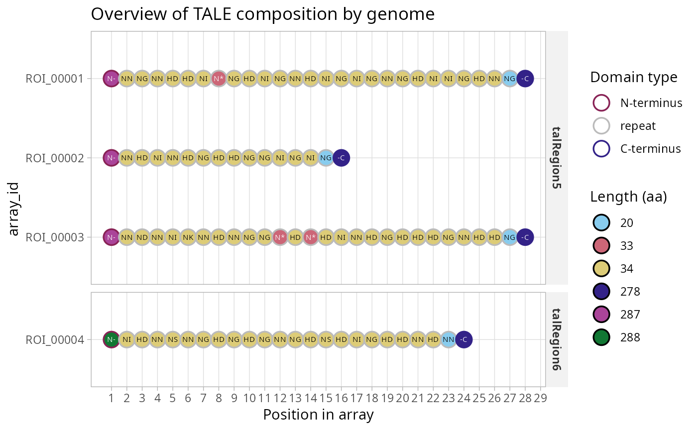
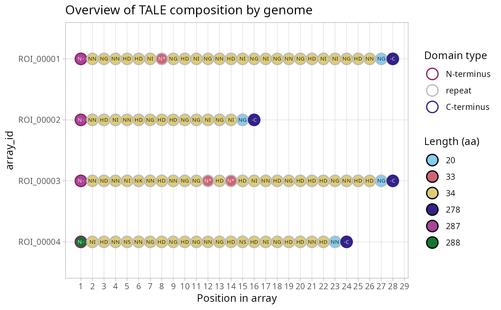

A compact, information-rich view of the arrays in a tales object: one
point per part, positioned by its place in the array, outlined by domain
type and filled by amino-acid length. Each repeat carries its RVD, each
terminus the short name of its code (N-, -C, or ??
for a terminus that does not match its TALE domain profile; see
tales_anchor_codes). Arrays are listed from the top in
alphabetical order of array_id, compared byte by byte as in every
projection of a tales object, so the order does not depend on the
locale.
Each length gets one colour, whatever the part. The canonical 34-aa repeat and the 20-aa half-repeat that ends every array always get calm colours (sand and pale blue), so a repeat of any other length (an aberrant repeat, for instance) stands out. The other lengths take strong colours in increasing order of length, from Paul Tol's schemes, which stay distinct for colour-blind readers; past 17 distinct lengths the colours repeat.
A tales_msa dispatches to plot.tales_msa
instead, being the more specific class.
Arguments
- x
A
talesobject, as returned bytales_from_telltalesor in thetaleselement oftales_compare_distal's output. A data frame of parts is accepted and converted withtales.- position
Which coordinate to lay the parts out on.
"array"(default) usesposition_in_array, so each array starts at 1 and runs contiguously."alignment"usesalignment_position, which requires an aligned object (or one demoted from atales_msa, which keeps the column): gaps then appear as empty columns and shared features line up. Aberrant repeats, for instance, are visible as a column in the aligned layout and scattered in the unaligned one.- facet_by
Names of the columns whose values split the plot into panels, stacked in rows whose height follows the number of arrays. Each column must hold one value per array:
"seqnames"(the default, one panel per source sequence) or"strain"for a set of genomes, for instance, andc("strain", "seqnames")for both.NULLdraws a single panel, as does the default whenxhas noseqnamescolumn.- ...
Unused, present for compatibility with the
plotgeneric.
Value
A ggplot object. Like any ggplot, it is drawn when printed, which
happens automatically at the console; inside a loop or a function, call
print() on it.
See also
Other TALE plots:
plot.tales_msa(),
plot_target_preds(),
talomes_heatmap()
Examples
x <- tales_from_telltales(system.file("extdata", "tellTaleExampleOutput",
package = "tantale"))
plot(x)

plot(x, facet_by = NULL)
